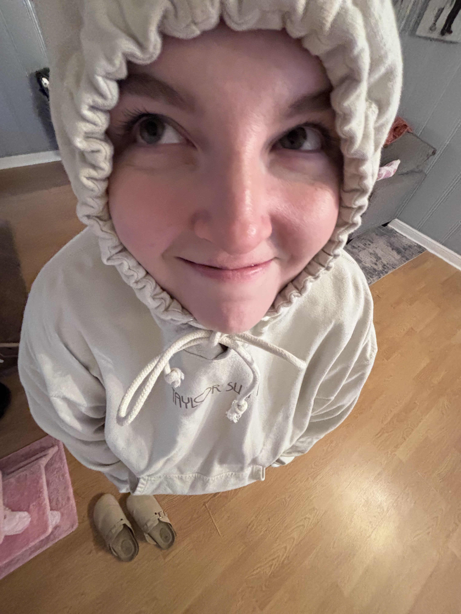

Who She Is
Madi is the focus of this bioSite project. This page introduces her personality, background, and the qualities that make her story worth sharing.

Background
This section will continue to grow as the bioSite project develops. It will include more details from the planning and interview work completed earlier in the course.
Important Qualities
Madi's story can be shaped through the people, experiences, goals, and interests that are meaningful to her.